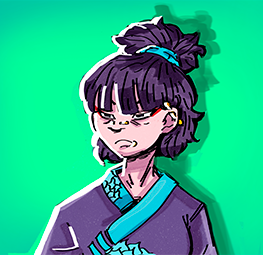
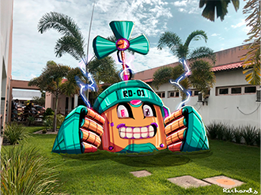

Aprecie um pouco do meu
trabalho!
Este site possui algumas das minhas artes favoritas, gostaria de apresenta-las a você, e a todos os telespectadores desse site, todo o meu trabalho como artista amador.
Retrato de uma asiática
Um retrato simples de uma asiática. As cores seletamente escolhidas valorizam bastante a arte, bem como o traço simples e bem utilizado, tem um foco em algo menos realista, sem muitos detalhes.
Tipografia "skate"
Uma arte que trabalha a tipografia, ou seja, a criação de arte modificando e/ou utilizando de letras, muito utilizada para vários tipos de coisas, um tipo de arte bem peculiar, e interessante, que possui um grande campo a se explorar.
RD-01 - Interação com foto
A mais diferente delas, arte envolvendo fotos. Basicamente uma arte por cima de uma foto real, utilizando os elementos do próprio cenário para causar uma impressão de interação com a foto.